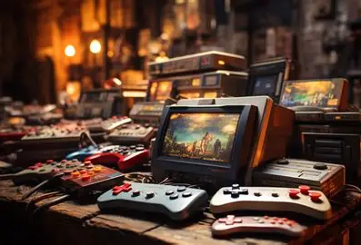

Historia de los juegos digitales
Los juegos digitales nacieron con la llegada de las primeras computadoras a mediados del siglo XX. El primer juego considerado digital fue Tennis for Two, creado en 1958, seguido por Pong en los años 70, que marcó el inicio de los videojuegos comerciales. Desde entonces, esta industria ha crecido rápidamente, evolucionando desde simples gráficos en 2D hasta mundos tridimensionales complejos y realistas.
Durante los años 80 y 90, surgieron consolas como Nintendo y Sega, que revolucionaron el entretenimiento en casa. Más tarde, con la expansión del internet, aparecieron los juegos en línea, permitiendo que millones de personas de todo el mundo jueguen juntas en tiempo real.
